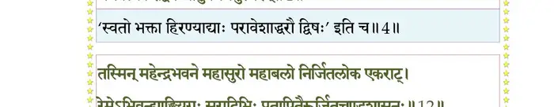
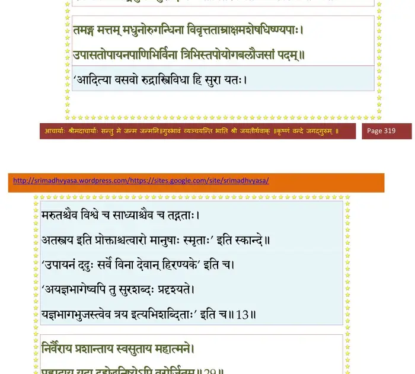
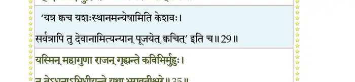
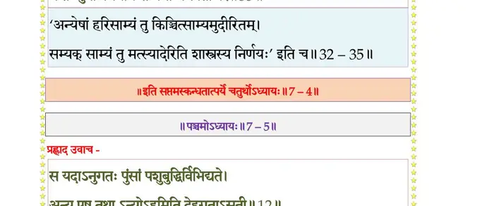

स्कन्ध 7 · अध्याय 4
श्लोक १
एवं वृतः शतधृतिः हिरण्यकशिपोरथ ।
प्रादात् तत्तपसा प्रीतो वरान् तस्य सुदुर्लभान्।। १ ।।
प्रादात् तत्तपसा प्रीतो वरान् तस्य सुदुर्लभान्।। १ ।।
श्लोक २
ब्रह्मोवाच–
तातेमे दुर्लभाः पुंसो यान् वृणीषे वरान् मम ।
तथाऽपि वितराम्यङ्ग वरान् यदपि दुर्लभान्।। २ ।।
तातेमे दुर्लभाः पुंसो यान् वृणीषे वरान् मम ।
तथाऽपि वितराम्यङ्ग वरान् यदपि दुर्लभान्।। २ ।।
श्लोक ३
ततो जगाम भगवानमोघानुग्रहो विभुः ।
पूजितोऽसुरवर्येणस्तूयमानः प्रजेश्वरैः।। ३ ।।
पूजितोऽसुरवर्येणस्तूयमानः प्रजेश्वरैः।। ३ ।।
श्लोक ४
एवं लब्धवरो दैत्यो बिभ्रद्धेममयं वपुः ।
भगवत्यकरोद् द्वेषं भ्रातुर्वधमनुस्मरन्।। ४ ।।
भगवत्यकरोद् द्वेषं भ्रातुर्वधमनुस्मरन्।। ४ ।।
भागवततात्पर्यनिर्णय

श्लोक ५
स विजित्य दिशः सर्वा लोकांश्च त्रीन् महासुरः ।
देवासुरमनुष्येन्द्रान् गन्धर्वगरुडोरगान्।। ५ ।।
देवासुरमनुष्येन्द्रान् गन्धर्वगरुडोरगान्।। ५ ।।
श्लोक ६
सिद्धचारणविद्याध्रान् ऋषीन् पितृपतीन् मनून् ।
यक्षरक्षःपिशाचेशान् प्रेतभूतपतीनपि।। ६ ।।
यक्षरक्षःपिशाचेशान् प्रेतभूतपतीनपि।। ६ ।।
श्लोक ७
सर्वसत्वपतीन् जित्वा वशमानीय विश्वजित् ।
जहार लोकपालानां स्थानानि सह तेजसा।। ७ ।।
जहार लोकपालानां स्थानानि सह तेजसा।। ७ ।।
श्लोक ८
देवोद्यानश्रिया जुष्टमध्यास्ते स्म त्रिविष्टपम् ।
महेन्द्रभवनं साक्षान्निर्मितं विश्वकर्मणा।। ८ ।।
महेन्द्रभवनं साक्षान्निर्मितं विश्वकर्मणा।। ८ ।।
श्लोक ९
त्रैलोक्यलक्ष्म्यायतनमध्युवासाखिलर्द्धिमत् ।
यत्र विद्रुमसोपाना महामरकता भुवः।। ९ ।।
यत्र विद्रुमसोपाना महामरकता भुवः।। ९ ।।
श्लोक १०
यत्र स्फटिककुड्यानि वैदूर्यस्तम्भपङ्क्तयः ।
यत्र चित्रवितानानि पद्मरागासनानि च।। १० ।।
यत्र चित्रवितानानि पद्मरागासनानि च।। १० ।।
श्लोक ११
पयःफेननिभाः शय्या मुक्तादामपरिच्छदाः ।
कूजद्भिर्नूपुरैर्देव्यः शब्दयन्त्य इतस्ततः ।
रत्नस्थलीषु पश्यन्ति सुदतीः सुन्दरं मुखम्।। ११ ।।
कूजद्भिर्नूपुरैर्देव्यः शब्दयन्त्य इतस्ततः ।
रत्नस्थलीषु पश्यन्ति सुदतीः सुन्दरं मुखम्।। ११ ।।
श्लोक १२
तस्मिन् महेन्द्रभवने महासुरो महाबलो निर्जितलोक एकराट् ।
रेमेऽभिवन्द्याङ्घ्रियुगः सुरादिभिः प्रतापितैरूर्जितचण्डशासनः।। १२ ।।
रेमेऽभिवन्द्याङ्घ्रियुगः सुरादिभिः प्रतापितैरूर्जितचण्डशासनः।। १२ ।।
भागवततात्पर्यनिर्णय

श्लोक १३
तमङ्ग मत्तं मधुनोरुगन्धिना विवृत्तताम्राक्षमशेषधिष्ण्यपाः ।
उपासतोपायनपाणिभिर्विना त्रिभिस्तपोयोगबलौजसां पदम्।। १३ ।।
उपासतोपायनपाणिभिर्विना त्रिभिस्तपोयोगबलौजसां पदम्।। १३ ।।
श्लोक १४
जगुर्महेन्द्रासनमोजसाऽऽस्थितं विश्वावसुस्तुम्बुरुरस्मदादयः ।
गन्धर्वसिद्धा ऋषयोऽस्तुवन् मुहुर्विद्याधरा अप्सरसश्च पाण्डव।।१४।।
गन्धर्वसिद्धा ऋषयोऽस्तुवन् मुहुर्विद्याधरा अप्सरसश्च पाण्डव।।१४।।
श्लोक १५
स एव वर्णाश्रमिभिः क्रतुभिर्भूरिदक्षिणैः ।
इज्यमानो हविर्भागानग्रहीत् स्वेन तेजसा ।। १५ ।।
इज्यमानो हविर्भागानग्रहीत् स्वेन तेजसा ।। १५ ।।
श्लोक १६
अकृष्टपच्या तस्यासीत् सप्तद्वीपवती मही ।
तथा कामदुघा द्यौश्च नानाश्चर्यपदं नभः।। १६ ।।
तथा कामदुघा द्यौश्च नानाश्चर्यपदं नभः।। १६ ।।
श्लोक १७
रत्नाकराश्च रत्नानि तत्पत्न्यश्चोहुरूर्मिभिः ।
क्षारसीधुघृतक्षौद्रदधिक्षीरामृतोदकाः।। १७ ।।
क्षारसीधुघृतक्षौद्रदधिक्षीरामृतोदकाः।। १७ ।।
श्लोक १८
शैला द्रोणीभिराक्रीडं सर्वर्तुषु गुणान् द्रुमाः ।
दधार लोकपालानामेक एव पृथग् गुणान्।। १८ ।।
दधार लोकपालानामेक एव पृथग् गुणान्।। १८ ।।
श्लोक १९
स इत्थं निर्जितककुबेकराड् विषयान् प्रियान् ।
यथोपजोषं भुञ्जानो नातृप्यदजितेन्द्रियः।। १९ ।।
यथोपजोषं भुञ्जानो नातृप्यदजितेन्द्रियः।। १९ ।।
श्लोक २०
एवमैश्वर्यमत्तस्य दृप्तस्योच्छास्त्रवर्तिनः ।
कालो महान् व्यतीयाय ब्रह्मशापमुपेयुषः।। २० ।।
कालो महान् व्यतीयाय ब्रह्मशापमुपेयुषः।। २० ।।
श्लोक २१
तस्योग्रदण्डसंविग्नाः सर्वे लोकाः सपालकाः ।
अन्यत्रालब्धशरणाः शरणं ययुरच्युतम्।। २१ ।।
अन्यत्रालब्धशरणाः शरणं ययुरच्युतम्।। २१ ।।
श्लोक २२
तस्यै नमोऽस्तु काष्ठायै यत्रात्मा हरिरीश्वरः ।
यद् गत्वा न निवर्तन्ते शान्ताः संन्यासिनोऽमलाः।। २२ ।।
यद् गत्वा न निवर्तन्ते शान्ताः संन्यासिनोऽमलाः।। २२ ।।
श्लोक २३
इति ते संयतात्मानः समाहितधियोऽमलाः ।
उपतस्थुर्हृषीकेशं विनिद्रा वायुभोजनाः।। २३ ।।
उपतस्थुर्हृषीकेशं विनिद्रा वायुभोजनाः।। २३ ।।
श्लोक २४
ओं नमो भगवते महापुरुषाय महात्मने ।
विशुद्धानुभवानन्दसन्दोहाय यतोऽभयम्।। २४ ।।
विशुद्धानुभवानन्दसन्दोहाय यतोऽभयम्।। २४ ।।
श्लोक २५
तेषामाविरभूद् वाणी अरूपा मेघनिस्वना ।
सन्नादयन्ती ककुभः साधूनामभयङ्करी।। २५ ।।
सन्नादयन्ती ककुभः साधूनामभयङ्करी।। २५ ।।
श्लोक २६
मा भैष्ट विबुधश्रेष्ठाः सर्वेषां भद्रमस्तु वः ।
मद्दर्शनं हि भूतानां सर्वश्रेयोपपत्तये।। २६ ।।
मद्दर्शनं हि भूतानां सर्वश्रेयोपपत्तये।। २६ ।।
श्लोक २७
ज्ञातमेतस्य दौरात्म्यं दैतेयापसदस्य यत् ।
तस्य शान्तिं करिष्यामि कालस्तावत् प्रतीक्ष्यताम्।। २७ ।।
तस्य शान्तिं करिष्यामि कालस्तावत् प्रतीक्ष्यताम्।। २७ ।।
श्लोक २८
यदा देवेषु वेदेषु गोषु विप्रेषु साधुषु ।
धर्मे मयि च विद्वेषः स वा आशु विनश्यति।। २८ ।।
धर्मे मयि च विद्वेषः स वा आशु विनश्यति।। २८ ।।
श्लोक २९
निर्वैराय प्रशान्ताय स्वसुताय महात्मने ।
प्रह्लादाय यदा द्रुह्येद्धनिष्येऽपि वरोर्जितम्।। २९ ।।
प्रह्लादाय यदा द्रुह्येद्धनिष्येऽपि वरोर्जितम्।। २९ ।।
भागवततात्पर्यनिर्णय

श्लोक ३०
नारद उवाच–
इत्युक्ता लोकगुरुणा तं प्रणम्य दिवौकसः ।
न्यवर्तन्त गतोद्वेगा मेनिरे चासुरं हतम्।। ३० ।।
इत्युक्ता लोकगुरुणा तं प्रणम्य दिवौकसः ।
न्यवर्तन्त गतोद्वेगा मेनिरे चासुरं हतम्।। ३० ।।
श्लोक ३१
तस्य दैत्यपतेः पुत्राश्चत्वारः परमाद्भुताः
प्रह्लादोऽभून्महान् तेषां गुणैर्महदुपासकः ।
ब्रह्मण्यः शीलसम्पन्नः सत्यसन्धो जितेन्द्रियः।। ३१ ।।
प्रह्लादोऽभून्महान् तेषां गुणैर्महदुपासकः ।
ब्रह्मण्यः शीलसम्पन्नः सत्यसन्धो जितेन्द्रियः।। ३१ ।।
श्लोक ३२
आत्मवत् सर्वभूतानामेकः प्रियसुहृत्तमः ।
दासवत् सन्नतार्याङ्घ्रिः पितृवद् दीनवत्सलः।। ३२ ।।
दासवत् सन्नतार्याङ्घ्रिः पितृवद् दीनवत्सलः।। ३२ ।।
श्लोक ३३
भ्रातृवत् सदृशे स्निग्धो गुरुष्वीश्वरभावनः ।
विद्यार्थरूपजन्माद्यैर्मानस्तम्भविवर्जितः।। ३३ ।।
विद्यार्थरूपजन्माद्यैर्मानस्तम्भविवर्जितः।। ३३ ।।
श्लोक ३४
नोद्विग्नचित्तो व्यसनेषु निःस्पृहः श्रुतेषु दृष्टेषु गुणेष्ववस्तुदृक् ।
दान्तेन्द्रियप्राणशरीरधीः सदा प्रशान्तकामो रहितासुरोऽसुरः ।। ३४ ।।
दान्तेन्द्रियप्राणशरीरधीः सदा प्रशान्तकामो रहितासुरोऽसुरः ।। ३४ ।।
श्लोक ३५
यस्मिन् महागुणा राजन् गृह्यन्ते कविभिर्मुहुः ।
न तेऽधुनाऽभिधीयन्ते यथा भगवतीश्वरे।। ३५ ।।
न तेऽधुनाऽभिधीयन्ते यथा भगवतीश्वरे।। ३५ ।।
भागवततात्पर्यनिर्णय

श्लोक ३६
यं साधुगाथासदसि रिपवोऽपि सुरा नृप ।
प्रतिमानं प्रकुर्वन्ति किमुतान्ये भवादृशाः।। ३६ ।।
प्रतिमानं प्रकुर्वन्ति किमुतान्ये भवादृशाः।। ३६ ।।
श्लोक ३७
गुणैरलमसङ्ख्येयैर्माहात्म्यं तस्य सूच्यते ।
वासुदेवे भगवति यस्य नैसर्गिकी रतिः।। ३७ ।।
वासुदेवे भगवति यस्य नैसर्गिकी रतिः।। ३७ ।।
श्लोक ३८
न्यस्तक्रीडनको बालो जडवत् तन्मनाः सदा ।
कृष्णग्रहगृहीतात्मा न वेद जगदीदृशम्।। ३८ ।।
कृष्णग्रहगृहीतात्मा न वेद जगदीदृशम्।। ३८ ।।
श्लोक ३९
आसीनः पर्यटन्नश्नन् शयानः प्रपिबन् ब्रुवन् ।
नानुसन्दध एतानि गोविन्दपरिरक्षितः।। ३९ ।।
नानुसन्दध एतानि गोविन्दपरिरक्षितः।। ३९ ।।
श्लोक ४०
क्वचिद् रुदति गोविन्दचिन्ताचञ्चलचेतनः ।
क्वचिद्धसति तच्चिन्ताह्लाद उद्गायति क्वचित्।। ४० ।।
क्वचिद्धसति तच्चिन्ताह्लाद उद्गायति क्वचित्।। ४० ।।
श्लोक ४१
नदति क्वचिदुत्कण्ठो विलज्जो नृत्यति क्वचित् ।
क्वचित् तद्भावनायुक्तस्तन्मयोऽनुचकार ह।। ४१ ।।
क्वचित् तद्भावनायुक्तस्तन्मयोऽनुचकार ह।। ४१ ।।
श्लोक ४२
क्वचिदुत्पुलकस्तूष्णीमशेषस्पर्शनिःस्पृहः ।
अस्पन्दप्राण आनन्दसलिलामीलितेक्षणः।। ४२ ।।
अस्पन्दप्राण आनन्दसलिलामीलितेक्षणः।। ४२ ।।
श्लोक ४४
स उत्तमश्लोकपदारविन्दयोर्निषेवयाऽकिञ्चनसङ्गलब्धया ।
तन्वन् परां निर्वृतिमात्मनो मुहुर्दुःसङ्गहीनः स्वमनःशमं व्यधात्।।
तस्मिन् महाभागवते महाभागे महात्मनि ।
हिरण्यकशिपू राजन् अकरोदघमात्मजे।। ४४ ।।
तन्वन् परां निर्वृतिमात्मनो मुहुर्दुःसङ्गहीनः स्वमनःशमं व्यधात्।।
तस्मिन् महाभागवते महाभागे महात्मनि ।
हिरण्यकशिपू राजन् अकरोदघमात्मजे।। ४४ ।।
श्लोक ४५
युधिष्ठिर उवाच–
देवर्ष एतदिच्छामो वेदितुं तव सुव्रत ।
यदात्मजाय शुद्धाय पिताऽधात् साधवे अघम्।। ४५ ।।
देवर्ष एतदिच्छामो वेदितुं तव सुव्रत ।
यदात्मजाय शुद्धाय पिताऽधात् साधवे अघम्।। ४५ ।।
श्लोक ४६
पुत्रान् विप्रतिकूलांश्च पितरः पुत्रवत्सलाः ।
उपालभन्ते शिक्षार्थं नैवाघमपरे यथा।। ४६ ।।
उपालभन्ते शिक्षार्थं नैवाघमपरे यथा।। ४६ ।।
श्लोक ४७
किमुतानुवशान् साधून् तादृशान् गुरुदेवतान् ।
एतत् कौतूहलं ब्रह्मन्नस्माकं विधम प्रभो ।
पितुः पुत्राय यद् द्वेषो मरणाय प्रयोजितः।। ४७ ।।
एतत् कौतूहलं ब्रह्मन्नस्माकं विधम प्रभो ।
पितुः पुत्राय यद् द्वेषो मरणाय प्रयोजितः।। ४७ ।।
।। इति श्रीमद्भागवते सप्तमस्कन्धे चतुर्थोऽध्यायः ।।